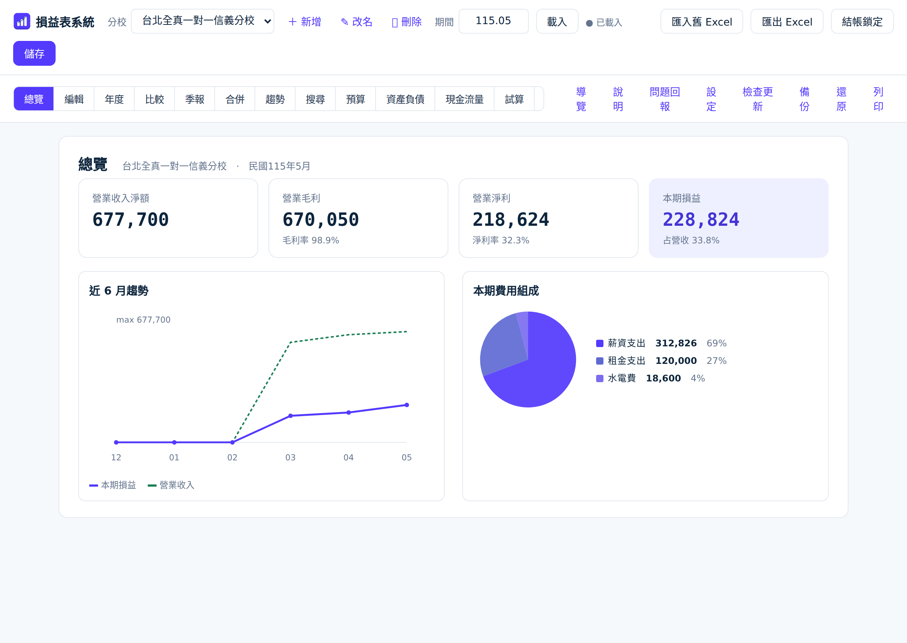
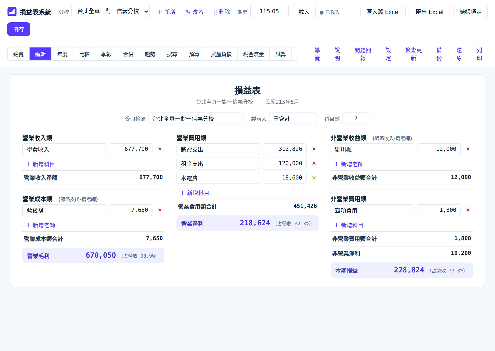
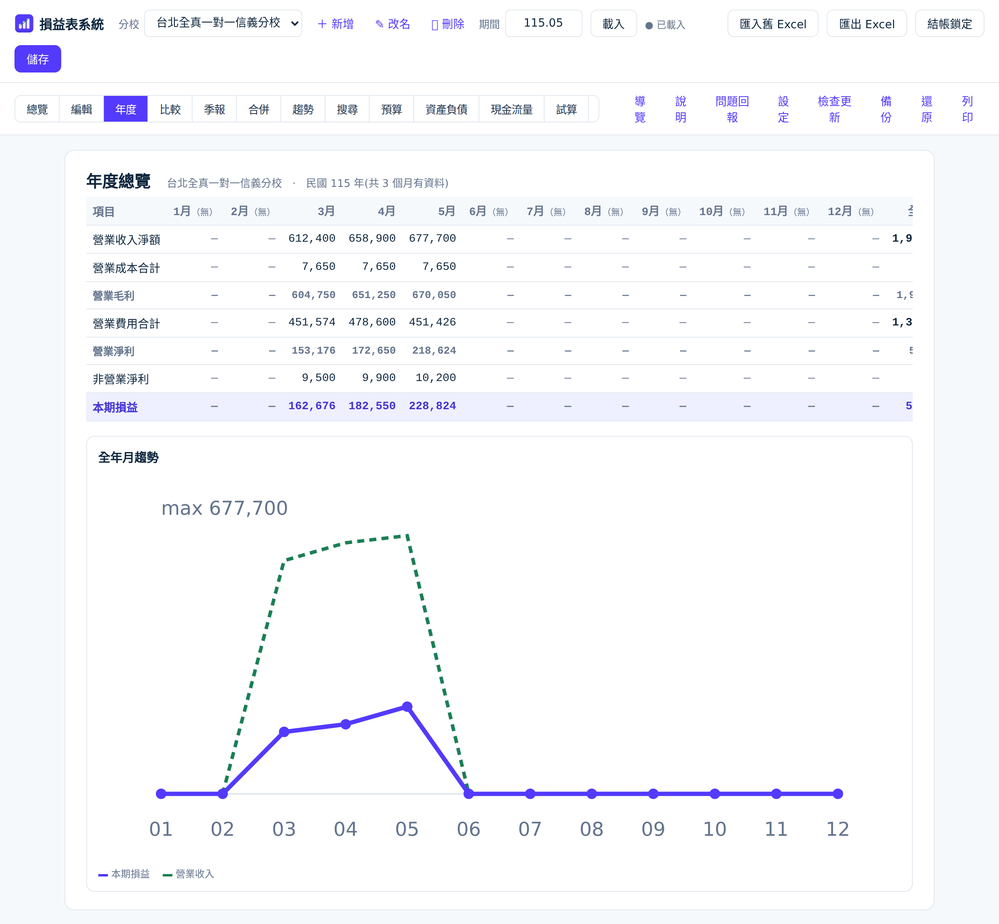
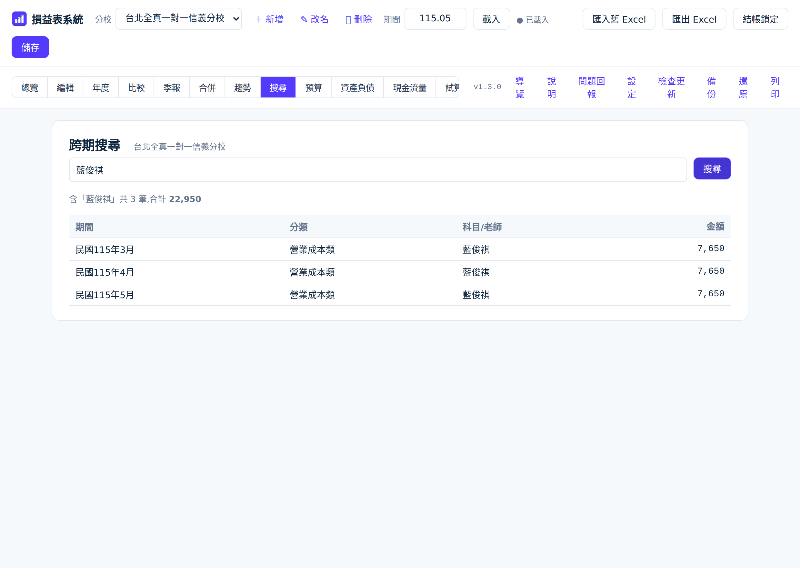

輕巧、專業的桌面損益表軟體,取代 Excel。即時計算、多分校、季報與趨勢、預算對比、資產負債表,還能輸出「股東報表」用手機開、直接傳 LINE。完全免費、免安裝、離線可用、會自動更新。

輸入資料馬上算出報表,即時確認最新數據
不用翻報表,打開就看到本月最重要的數字與比率,還有近 6 個月的趨勢和費用組成。
三欄式損益表,輸入金額即時計算;支援固定項目範本與科目分組,讓每個月的帳越記越快。

年底結算最實用。12 個月的關鍵指標並排對照,加上全年合計與月趨勢,經營全貌一目了然。

輸入老師姓名或科目,立即列出各月金額與合計,不用一個月一個月翻。

不用學一整套 ERP,該有的專業功能卻一個不少
沒有月費、沒有使用人數限制,下載就能用,持續免費更新。
單一 .exe 雙擊開啟,沒網路也能用,不必架伺服器、不必註冊帳號。
有新版自動提示,按一下自動下載、更新、重開,更新前還會自動備份。
帳務只存自己電腦的「文件」資料夾,安全私密,還能一鍵備份還原。
內建逐步導覽圈出每個功能,加上白話使用說明,不用教也會。
一鍵問題回報自動帶版本與錯誤,配合需求持續開發新功能。
對標 QuickBooks / Xero 等專業財務軟體的核心能力
輸入科目金額,毛利、淨利、本期損益即時算出,千分位、負數標示清楚。
各分校資料分開存放,可新增、改名、切換,並產出全分校合併報表。
一開啟先看本月 KPI 與迷你趨勢;年度頁一次看整年 12 個月與全年合計。
環比上月、同比去年同月、近 6 月趨勢圖與費用組成,一眼看懂變化。
輸入老師姓名或科目,立即列出各月金額與合計,查帳對帳超方便。
每三個月一季,三月並排加季合計,股東檢視更全面。
填入預算,即時比較實際達成率,掌握經營狀況。
自動檢核「資產 = 負債 + 權益」是否平衡。
舊有 Excel 損益表可直接匯入;報表可匯出 Excel、列印或存 PDF。
每次存檔自動記錄異動明細,帳務有跡可循、更可信。
把每月固定的科目和金額(房租、固定薪資⋯)存成範本,新月份自動帶入。
把科目歸到「人事費」「場地費」等群組,報表自動顯示各群組小計。
營業、投資、籌資三大活動現金流一目了然,掌握錢真正的進出。
所有科目餘額一覽,快速核對借貸是否平衡,結帳前自我檢查。
一鍵輸出單一網頁檔,手機直接開、可傳 LINE 給股東檢視,免裝任何軟體。
民國 / 西元紀年自由切換,毛利率、淨利率等比率可開可關,報表更貼合需求。
不用教學影片,打開就會用
點按鈕下載 .exe,雙擊即可開啟,免安裝、免註冊。
直接輸入每月科目金額,或匯入舊有的 Excel 損益表。
查看報表、比較、圖表,匯出 Excel 或列印給股東。